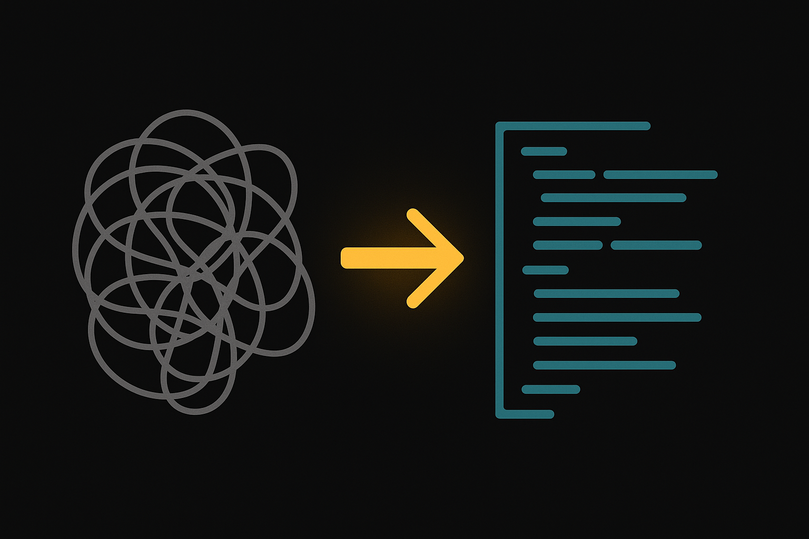

Course 08 / Layer 2 -- ツール応用
OpenAI Codex応用 自律開発エージェントCodex CLIの自律実行機能をフル活用した高度な開発ワークフロー。full-autoモードの安全運用、大規模リファクタリング、テスト自動生成、ツール横断ワークフロー、CI/CD統合まで。C06基礎の上に本格的なプロダクション適用力を身につけます。
中級-上級 約10時間(600分) 8 Sections + 3 Review ハンズオン比率 65% 前提: C06受講済み
Section 01 -- 55min(講義30 + ハンズオン25)
full-autoモードの設計と安全運用
full-autoの仕組み
Codex CLIには3つの実行モードがあります。suggest(提案のみ)、auto-edit(ファイル編集を自動承認)、full-auto(全操作を自動実行)。full-autoモードではCodexがサンドボックス内でシェルコマンドの実行からファイル編集までを一気に行います。人間の承認ステップを飛ばすため速度は劇的に向上しますが、その分だけ運用設計が問われます。
安全性の基盤
full-autoが「自由にやりたい放題」にならない理由は、サンドボックスの存在です。
ネットワーク隔離 -- 外部への通信を遮断。悪意のあるコードが実行されても情報流出しないファイルシステム隔離 -- codex.tomlの writable_roots で書き込み可能なディレクトリを明示的に制限プロセス隔離 -- ホストOSへの影響を最小化するコンテナ技術
# codex.toml の例
[sandbox]
writable_roots = ["./src", "./tests", "./docs"]
# ./src, ./tests, ./docs 以外への書き込みは拒否されるコピー
それでも必要な注意点
サンドボックスがあっても万能ではありません。意図しないファイルの大量削除、src配下の想定外の書き換え、テストコードの上書きといったリスクは残ります。APIコール数が膨れ上がるケースもあるため、トークン消費のモニタリングは欠かせません。
承認フローの設計
すべてのタスクにfull-autoを適用するのは危険です。タスクの性質に応じて実行モードを使い分ける判断基準を持つことが運用の要になります。
タスク種別 推奨モード 理由
テストファイルの新規生成 full-auto 既存コードへの影響が小さい。生成後にテスト実行で検証可能 既存コードのリファクタリング auto-edit 変更差分を確認してからコミットしたい 設定ファイルの変更 suggest CI/CDやデプロイに直結するため慎重に ドキュメント生成 full-auto 実行コードに影響しない 依存パッケージの更新 suggest 破壊的変更のリスク。lock fileの確認が必須 新機能のスキャフォールド full-auto 新規ファイルが中心。既存への影響は少ない
ロールバック手順
full-autoで意図しない変更が起きた場合、gitが最後の砦です。コマンドの引き出しを整理しておきます。
# 作業中の変更を一時退避
git stash
# 特定ファイルだけ元に戻す
git checkout -- path/to/file.ts
# 直前のコミットを取り消し(変更は残す)
git reset --soft HEAD~1
# 直前のコミットごと完全に巻き戻す(変更も消える)
git reset --hard HEAD~1コピー
git reset --hard は最終手段
--hard を使うと変更が完全に消えます。まずは git stash や --soft で復旧を試み、それでもダメな場合のみ --hard を検討してください。
full-auto適用の判断フロー
%%{init:{'theme':'dark','themeVariables':{'primaryColor':'#00A5BF','primaryBorderColor':'#007A8F','primaryTextColor':'#e8e8e8','lineColor':'#00A5BF','secondaryColor':'#1a1a1a','background':'#141414','mainBkg':'#1a1a1a','nodeBorder':'#00A5BF'}}}%%
flowchart TD
A["タスクを受領"] --> B{"既存コードへの\n影響は?"}
B -->|大きい| C{"テストは\n存在する?"}
B -->|小さい/新規| D["full-auto OK"]
C -->|ある| E["auto-edit\n差分確認後コミット"]
C -->|ない| F["先にテスト生成\nfull-autoでOK"]
F --> E
B -->|設定/インフラ| G["suggest\n手動確認必須"]
タスクの影響度とテスト有無で実行モードを選択する
監視とログ
full-auto実行中はターミナルにリアルタイムでログが流れます。--watchフラグを付けると、Codexが実行した各ステップとその結果を逐一表示します。想定外のファイルに触れていないか、エラーが発生していないかをログで追えるようにしておくのが運用の基本です。
実行ログの読み方
full-autoモードの実行後に「何が行われたか」を把握する方法は複数あります。
確認方法 コマンド / 操作 わかること
ターミナルログ 実行中のターミナル出力をスクロール 各ステップの実行順序、成功/失敗、エラーメッセージ git diff git diff / git diff --stat変更されたファイルの一覧と差分。意図しない変更の発見に使う git log git log --oneline -10Codexが自動コミットした場合のコミット履歴 --watchフラグ codex --watch --approval-mode full-auto "タスク"リアルタイムで各アクション(ファイル読取、編集、コマンド実行)を逐一表示
Tips: ログを残す習慣
full-autoの実行結果をファイルにリダイレクトしておくと、後から振り返れて便利です。
codex --approval-mode full-auto "タスク" 2>&1 | tee codex-log.txt で標準出力とエラー出力の両方をファイルに記録できます。
ハンズオン: 3モード切替とロールバック 25min
目標: suggest / auto-edit / full-auto の違いを体感し、ロールバック操作を身につける
パート1: 同一タスクを3モードで実行(10min)
任意のプロジェクトディレクトリで新しいブランチを作成してください
git checkout -b codex-mode-testコピー
以下のタスクを3つのモードでそれぞれ実行し、動作の違いを観察してください
codex --approval-mode suggest "README.mdにプロジェクトの概要セクションを追加して"
codex --approval-mode auto-edit "README.mdにプロジェクトの概要セクションを追加して"
codex --approval-mode full-auto "README.mdにプロジェクトの概要セクションを追加して"コピー
各モードで「人間が介入するタイミング」がどう変わるかを記録してください
パート2: ロールバック練習(10min)
full-autoで以下を実行し、意図的に大きめの変更を発生させてください
codex --approval-mode full-auto "srcディレクトリ内の全ファイルに日本語コメントを追加して"コピー
変更をコミットせず、以下の手順でロールバックしてください
まず git diff で変更箇所を確認
git stash で一時退避
git stash pop で復元
git checkout -- . で全変更を破棄
パート3: 承認フロー判断シート作成(5min)
以下のテンプレートをダウンロードし、自分のプロジェクトの典型タスクを5つ記入してください
3モードの動作の違いを確認した
git stash / checkout によるロールバックを実行した
承認フロー判断シートに5タスク記入した
Section 02 -- 55min(講義25 + ハンズオン30)
AGENTS.md高度設計 -- マルチエージェント指示
階層的AGENTS.md
AGENTS.mdはプロジェクトルートに1つ置くだけでも効果がありますが、サブディレクトリごとに配置するとCodexの精度が格段に上がります。ルートにはプロジェクト全体の方針、サブディレクトリにはその領域固有のルールを書く。人間のチームで言えば、全社ルールと部門ルールの関係に近い構造です。
project/
AGENTS.md # プロジェクト全体: コーディング規約、使用言語、テストポリシー
src/
frontend/
AGENTS.md # フロントエンド固有: React/Next.js, Tailwind, コンポーネント命名規則
backend/
AGENTS.md # バックエンド固有: Express/Fastify, DB接続, エラーハンドリング方針
shared/
AGENTS.md # 共有ライブラリ: 型定義、ユーティリティの変更ルール
tests/
AGENTS.md # テスト固有: テストフレームワーク、カバレッジ基準コピー
ファイルスコープ制御
サブディレクトリのAGENTS.mdに「このディレクトリ以下のファイルだけを対象にする」と明記すると、Codexが別ディレクトリのファイルを勝手に触るリスクを抑えられます。マイクロサービス構成やモノレポで特に効果的です。
# src/frontend/AGENTS.md の例
## スコープ
このAGENTS.mdは src/frontend/ 配下のファイルのみに適用される。
src/backend/ や src/shared/ のファイルを直接変更してはならない。
共有型定義を変更する必要がある場合は、変更提案をコメントとして出力すること。
## 技術スタック
- React 19 + Next.js 15 (App Router)
- Tailwind CSS v4
- 状態管理: Zustand
- テスト: Vitest + Testing Libraryコピー
マルチエージェント指示
複数のCodexインスタンス(あるいはClaude CodeやCopilot)が同時に同じリポジトリを編集する場面が出てきます。衝突を防ぐために、AGENTS.mdにロック対象ファイルや編集優先順位を定義しておくと混乱が減ります。
AGENTS.md設計パターン集
フロントエンド向け
コンポーネントはfunction宣言で書く
CSSはTailwindユーティリティのみ
状態管理はZustandかjotaiを使う
APIコールはカスタムhookに集約
ページコンポーネントはServer Component
バックエンド向け
エラーは必ずtry-catchで捕捉
DBクエリはパラメータ化する
環境変数は直接参照せずconfig経由
ログはpino/winstonを使う
レスポンスは統一フォーマットで返す
インフラ向け
Terraformのstate変更は禁止
Dockerfileの変更はセキュリティレビュー必須
環境変数の追加時はREADME更新も行う
CIパイプラインの変更はdry-runで確認
テスト向け
テスト名は日本語で書いて可
モックは最小限に。実結合テスト推奨
カバレッジ80%以上を維持
スナップショットテストは新規追加しない
CLAUDE.mdとの差異と互換性
項目 AGENTS.md (Codex) CLAUDE.md (Claude Code)
対象ツール OpenAI Codex CLI Claude Code (Anthropic) 読み込みタイミング Codex起動時にカレントディレクトリから上方探索 claude起動時にプロジェクトルートを探索 階層サポート サブディレクトリごとに配置可能 プロジェクトルートの1ファイル(+ .claude/settings.json) 記法 Markdown自由記述 Markdown自由記述 相互読み込み CLAUDE.mdは読まない AGENTS.mdは読まない 互換運用 共通ルールを別ファイル(CODING_RULES.md等)に書き、両方から参照するパターンが実用的
Tips: 共通ルールの切り出し
AGENTS.mdとCLAUDE.mdに同じ内容をコピペすると保守が面倒です。CODING_RULES.mdを1つ作り、両方のファイルから「詳細はCODING_RULES.mdを参照」と記述するほうが現実的です。
ハンズオン: 階層的AGENTS.md構築 30min
目標: プロジェクト構造に合わせた階層的AGENTS.mdを設計し、スコープ制限の効果を確認する
パート1: 階層的AGENTS.md作成(15min)
以下のテンプレートをダウンロードしてください
以下のディレクトリ構造を作成し、各階層にAGENTS.mdを配置してください
mkdir -p codex-agents-demo/src/{frontend,backend} codex-agents-demo/tests
# ルートAGENTS.md
cat > codex-agents-demo/AGENTS.md << 'EOF'
# プロジェクトルール
- 言語: TypeScript
- テスト: 全関数にユニットテストを書くこと
- コミットメッセージ: Conventional Commits形式
EOF
# フロントエンド AGENTS.md
cat > codex-agents-demo/src/frontend/AGENTS.md << 'EOF'
# フロントエンドルール
## スコープ
src/frontend/ 配下のファイルのみ対象。backend/ のファイルを変更してはならない。
## 技術スタック
- React 19 + Tailwind CSS v4
- コンポーネントはfunction宣言
EOF
# バックエンド AGENTS.md
cat > codex-agents-demo/src/backend/AGENTS.md << 'EOF'
# バックエンドルール
## スコープ
src/backend/ 配下のファイルのみ対象。frontend/ のファイルを変更してはならない。
## 技術スタック
- Express + Prisma
- エラーは必ずtry-catchで捕捉
EOFコピー
パート2: スコープ制限テスト(10min)
frontend/ディレクトリで以下を実行し、backend/のファイルが変更されないか確認してください
cd codex-agents-demo/src/frontend
codex --approval-mode auto-edit "ボタンコンポーネントを作成して"コピー
git diff でfrontend/以外のファイルが変更されていないことを確認
パート3: AGENTS.md改善をCodexに提案させる(5min)
codex "このプロジェクトのAGENTS.mdを読んで、改善提案を3つ出して。不足しているルールや曖昧な記述を指摘して。"コピー
ルート + 2つのサブディレクトリにAGENTS.mdを配置した
スコープ制限が正しく効いていることを確認した
CodexにAGENTS.mdの改善提案を出させた
Section 03 -- 60min(講義25 + ハンズオン35)
大規模リファクタリング

AIによるリファクタリングが有効な場面
人間が嫌がる定型的な修正こそAIの得意領域です。
命名統一 -- camelCaseとsnake_caseの混在を一括修正コードスタイル統一 -- セミコロン有無、インデント幅の統一フレームワーク移行 -- Express to Fastify、Options API to Composition API言語変換 -- JavaScript to TypeScript、Python 2 to Python 3非推奨APIの置換 -- ライブラリのバージョンアップに伴うAPI変更
リファクタリング戦略
2つのアプローチがあります。段階的(ファイルを1つずつ処理)と一括(full-autoで一気に実行)。どちらを選ぶかはテストの充実度で決まります。
段階的リファクタリング ファイル単位で変換しテストを通す。安全だが時間がかかる。テストが不十分なプロジェクト向き。
一括リファクタリング full-autoで全ファイルを一気に変換。速いがリスクが大きい。テストが充実しているプロジェクト向き。
安全にリファクタリングするための前提
テストがないコードのリファクタリングは、目隠しで走るのに等しい。まずテストを書き、それからリファクタリングに入る。この順番は絶対です。Codexに「まずテストを書いて、その後リファクタして」と一度に指示できるのが、AIリファクタリングの強みでもあります。
%%{init:{'theme':'dark','themeVariables':{'primaryColor':'#00A5BF','primaryBorderColor':'#007A8F','primaryTextColor':'#e8e8e8','lineColor':'#00A5BF','secondaryColor':'#1a1a1a','background':'#141414','mainBkg':'#1a1a1a','nodeBorder':'#00A5BF'}}}%%
flowchart LR
A["テスト確認"] --> B{"テストは\n十分?"}
B -->|No| C["テスト自動生成"]
C --> D["ブランチ作成"]
B -->|Yes| D
D --> E["リファクタリング\n実行"]
E --> F["テスト実行"]
F --> G{"全テスト\nパス?"}
G -->|No| H["差分確認\n修正"]
H --> E
G -->|Yes| I["コードレビュー"]
I --> J["マージ"]
テスト確認 → ブランチ作成 → リファクタ → テスト → レビュー → マージの安全フロー
段階的リファクタリングアプローチ
一度にすべてを変えると何が壊れたか特定できません。フェーズを分けて、各フェーズでテストを通す運用が安全です。
Phase 1: 命名統一(影響小)
変数名・関数名の表記揺れを統一する。振る舞いは一切変えないので、テストの期待値も変わらない。
// Before: snake_case と camelCase が混在
function get_user_data(user_id) {
const user_name = fetchName(user_id)
const userEmail = fetchEmail(user_id)
return { user_name, userEmail }
}
// After: camelCase に統一
function getUserData(userId) {
const userName = fetchName(userId)
const userEmail = fetchEmail(userId)
return { userName, userEmail }
}コピー
Phase 2: 関数分割(影響中)
50行を超える関数を責務ごとに分割する。入出力は変えないので、既存テストはそのまま通るはず。
// Before: 1つの巨大関数
function processOrder(order) {
// バリデーション(20行)
// 在庫確認(15行)
// 金額計算(15行)
// DB保存(10行)
// メール送信(10行)
}
// After: 責務ごとに分割
function validateOrder(order) { /* ... */ }
function checkInventory(order) { /* ... */ }
function calculateTotal(order) { /* ... */ }
function saveOrder(order) { /* ... */ }
function sendConfirmation(order) { /* ... */ }
function processOrder(order) {
validateOrder(order)
checkInventory(order)
const total = calculateTotal(order)
saveOrder({ ...order, total })
sendConfirmation(order)
}コピー
Phase 3: パターン適用(影響大)
デザインパターンの適用、フレームワーク移行など構造レベルの変更。テストの修正が必要になることが多いため、テストが十分にある状態で着手してください。
例: コールバック地獄 → async/await変換、Class Component → Function Component、Express → Fastify移行など。
Tips: ブランチ戦略
リファクタリング専用のブランチを必ず切ってください。mainブランチでfull-autoを走らせるのは事故の元です。refactor/naming-convention のように目的が明確なブランチ名をつけましょう。
ハンズオン: レガシーコードのリファクタリング 35min
目標: テストなしのレガシーコードに対してテスト生成 → リファクタリング → 回帰確認を一連で実行する
Step 1: サンプルレガシーコードの準備(5min)
ダウンロードしたファイルを新しいプロジェクトに配置してください
Codexにコードの問題点を分析させます
codex "legacy-code.jsを読んで、問題点を一覧にして。命名規則、エラーハンドリング、コード構造の観点で分析して。"コピー
Step 2: テスト自動生成(10min)
codex --approval-mode full-auto "legacy-code.jsの全関数に対するユニットテストをJestで書いて。テストファイル名はlegacy-code.test.jsにして。エッジケースも含めること。"コピー
生成されたテストを確認し、npm test で全テストがパスすることを確認
Step 3: full-autoでリファクタリング(10min)
codex --approval-mode full-auto "legacy-code.jsを以下の方針でリファクタリングして。
1. 変数名・関数名をcamelCaseに統一
2. var を const/let に置換
3. コールバックをasync/awaitに変換
4. エラーハンドリングをtry-catchで統一
5. マジックナンバーを名前付き定数に
テストが全てパスすることを確認してから完了にして。"コピー
Step 4: テスト実行で回帰確認(5min)
npm testコピー
全テストがパスすれば、リファクタリングが既存の振る舞いを壊していないことの証明になります。
Step 5: diffを確認してレビュー(5min)
git diffコピー
変更差分を確認し、意図しない変更がないかチェックしてください。
レガシーコードの問題点を分析させた
テストを自動生成し、全テストがパスした
full-autoでリファクタリングを実行した
テスト再実行で回帰がないことを確認した
git diffで変更差分を確認した
Review Hands-on A -- 30min
復習ハンズオン A: full-auto + AGENTS.md + リファクタリング一連フロー
Section 01-03の内容を統合した実践演習です。一連の流れを通しで実行し、各要素がどう連携するかを体感します。
課題: AGENTS.md付きプロジェクトのfull-autoリファクタリング 30min
成果物: AGENTS.md設計済みプロジェクト + リファクタリング済みコード + テスト結果
新しいプロジェクトディレクトリを作成し、AGENTS.mdを配置してください(5min)
Section 03で使ったレガシーコードをコピーし、ルートAGENTS.mdに「TypeScript移行」の方針を記載してください(5min)
Codexにまずテストを生成させてください(5min)
full-autoモードでJavaScript → TypeScript変換を実行してください(10min)
codex --approval-mode full-auto "AGENTS.mdの方針に従って、このプロジェクトのJSファイルをTypeScriptに移行して。型定義を追加し、テストもTS化して。全テストがパスすることを確認して。"コピー
結果を確認し、AGENTS.mdの方針がどの程度反映されたか評価してください(5min)
AGENTS.mdを設計し配置した
テスト生成 → TypeScript移行 → テスト再実行の一連フローを完走した
AGENTS.mdの方針がコードに反映されていることを確認した
Section 04 -- 60min(講義25 + ハンズオン35)
テスト自動生成と品質保証
テストカバレッジ目標の設定
カバレッジは高ければ良いというものではありませんが、低すぎるとリファクタリングの安全網が機能しません。プロジェクトの性質に応じた現実的な目標値を設定する必要があります。
行カバレッジ(Line Coverage) -- コードの何%が実行されたか。最もポピュラーブランチカバレッジ(Branch Coverage) -- if/elseの各分岐がテストされたか。行カバレッジより厳格関数カバレッジ(Function Coverage) -- 各関数が少なくとも1回は呼ばれたか
テスト種別とAI適性
テスト種別 対象 自動化レベル AI生成の適性 注意点
ユニットテスト 関数・メソッド単体 高 高 -- Codexが最も得意 モックの適切性を人間が確認 統合テスト モジュール間連携 中 中 -- APIエンドポイント単位なら得意 環境依存の設定が必要 E2Eテスト ユーザーシナリオ全体 低 低 -- ブラウザ操作の再現が困難 Playwrightのテンプレートを渡すと精度向上 スナップショット UIコンポーネント 高 低 -- 初回生成は容易だが保守が困難 頻繁に壊れるため新規追加は非推奨
Codexが生成するテストの品質
Codexはユニットテストの生成精度が高く、関数のシグネチャと実装を読み取ってhappy pathとエッジケースの両方を出してきます。ただし限界もあります。
ビジネスロジックの意図理解 -- 「なぜこの計算式なのか」まではAIが理解できない。仕様書や要件定義をコンテキストに含める必要がある複雑な状態遷移 -- ステートマシンのような複雑な状態管理のテストは、人間が遷移パターンを指定するのが確実外部依存のモック -- DB接続やAPI呼び出しのモックは生成できるが、モックの粒度が粗い場合がある
AI生成テストの落とし穴
AIは「テストがパスする」コードを書きますが、「正しいことをテストしている」かは別問題です。実装をそのままコピーしたような形だけのテストが生成されることがあります。テストが「何を検証しているか」を人間が確認するプロセスは省けません。
AI生成テストの品質チェック5項目
カバレッジの実質性 -- 行カバレッジ80%以上はあるか。ただし、カバレッジの数字だけでなく、ブランチカバレッジ(if/elseの両方)も確認する。カバレッジが高くても意味のあるassertionがなければ無価値エッジケースの網羅 -- null, undefined, 空文字列, 空配列, 0, 負数, 最大値。これらを入力した場合のテストが含まれているか。AIはhappy pathのテストは得意だが、境界値を見落とすことがあるテストの独立性 -- 各テストが他のテストの実行結果に依存していないか。テストの実行順序を変えても結果が同じか。共有状態(グローバル変数やDB)を使っているテストは要注意可読性とテスト名 -- テスト名を読むだけで「何を検証しているか」がわかるか。「test1」「should work」のような曖昧な名前は許容しない。「空文字列を渡したときにバリデーションエラーを返すこと」レベルの具体性が必要実行速度 -- 全テストが10秒以内に完了するか。外部APIやDBへの実接続を含むテストがないか。遅いテストはCI/CDのボトルネックになり、やがて誰も実行しなくなる
ハンズオン: テストカバレッジ改善 35min
目標: カバレッジ計測 → AI生成テスト追加 → カバレッジ向上を数値で確認する
Step 1: カバレッジレポートの取得(5min)
# Jestのカバレッジレポート
npx jest --coverage
# カバレッジサマリが出力される
# Statements: XX% | Branches: XX% | Functions: XX% | Lines: XX%コピー
Step 2: カバレッジが低い箇所のテスト生成(10min)
codex --approval-mode full-auto "カバレッジレポートを確認して、カバレッジが80%未満の関数に対してテストを追加して。特にブランチカバレッジが低い箇所を優先。"コピー
Step 3: エッジケース追加指示(10min)
codex --approval-mode full-auto "既存テストにエッジケースを追加して。以下のパターンを含めること:
- null/undefined入力
- 空文字列/空配列
- 境界値(0, 負数, 最大値)
- 型が異なる入力
- 非同期処理のタイムアウト"コピー
Step 4: テスト実行+カバレッジ再計測(5min)
npx jest --coverageコピー
Step 1と比較してカバレッジがどれだけ向上したか記録してください。
Step 5: AI生成テストのレビュー(5min)
以下のチェックリストで生成されたテストをレビューしてください。
テストが「実装のコピー」になっていないか(期待値がハードコードされているか)
モックの粒度は適切か(過度なモックで実質何もテストしていないケースはないか)
テスト名が何を検証しているか明確か
エッジケースが網羅されているか
初期カバレッジを計測した
AI生成テストでカバレッジを向上させた
エッジケーステストを追加した
カバレッジの前後比較を記録した
レビューチェックリストで品質を確認した
Section 05 -- 55min(講義25 + ハンズオン30)
マルチリポジトリ運用
モノレポでの活用
モノレポ(monorepo)では複数のパッケージが1つのリポジトリに同居します。ルートAGENTS.mdでプロジェクト共通ルールを定義し、各パッケージディレクトリにはパッケージ固有のAGENTS.mdを配置する。Section 02で学んだ階層構造がここで活きてきます。
monorepo/
AGENTS.md # 共通: TypeScript, ESLint, Prettier
packages/
web/
AGENTS.md # Next.js App Router, Tailwind
api/
AGENTS.md # Express, Prisma, OpenAPI
shared/
AGENTS.md # 共有型定義, ユーティリティ(変更時は両方のテスト実行)
config/
AGENTS.md # ESLint/Prettier/TSConfig(変更は全パッケージに影響)コピー
マイクロサービスでの活用
マイクロサービスアーキテクチャでは各サービスが独立したリポジトリを持つ場合が多いですが、API仕様書(OpenAPI/Swagger)を共有コンテキストとしてAGENTS.mdから参照させることで、Codexがサービス間のインターフェースを理解できるようになります。
リポジトリ横断の変更
バックエンドのAPIインターフェースを変更したら、フロントエンドのAPIクライアントも更新が必要です。モノレポであればCodexに「APIの変更に合わせてクライアントも更新して」と指示するだけで、両方のコードを整合性を保って修正できます。
%%{init:{'theme':'dark','themeVariables':{'primaryColor':'#00A5BF','primaryBorderColor':'#007A8F','primaryTextColor':'#e8e8e8','lineColor':'#00A5BF','secondaryColor':'#1a1a1a','background':'#141414','mainBkg':'#1a1a1a','nodeBorder':'#00A5BF'}}}%%
sequenceDiagram
participant Dev as 開発者
participant Codex as Codex CLI
participant API as api/
participant Web as web/
participant Shared as shared/
Dev->>Codex: "ユーザーAPIにemailフィールドを追加して"
Codex->>Shared: 型定義を更新(User型にemail追加)
Codex->>API: APIエンドポイント更新
Codex->>API: バリデーション追加
Codex->>Web: APIクライアント更新
Codex->>Web: フォームにemailフィールド追加
Codex->>Dev: 全ファイルの変更完了
Dev->>Dev: テスト実行で整合性確認
モノレポでのリポジトリ横断変更フロー
依存関係の管理
リポジトリ横断の変更では、変更の順序が重要です。共有型定義 → バックエンド → フロントエンドの順で更新しないと、中間状態でビルドエラーが発生します。AGENTS.mdに変更順序を明記しておくと安全です。
ハンズオン: モノレポでのAPI横断変更 30min
目標: front/backの2ディレクトリ構成でAPI変更 → フロントエンド自動対応を体験する
Step 1: モノレポ構造のセットアップ(10min)
mkdir -p monorepo-demo/{front,back,shared}
cd monorepo-demo && git init
# shared/types.ts
cat > shared/types.ts << 'EOF'
export interface User {
id: string;
name: string;
}
export interface ApiResponse {
data: T;
status: number;
}
EOF
# back/server.ts(簡易API)
cat > back/server.ts << 'EOF'
import { User, ApiResponse } from '../shared/types';
function getUser(id: string): ApiResponse {
return {
data: { id, name: 'Taro' },
status: 200,
};
}
export { getUser };
EOF
# front/app.ts(フロントエンド)
cat > front/app.ts << 'EOF'
import { User, ApiResponse } from '../shared/types';
async function fetchUser(id: string): Promise {
const res: ApiResponse = await fetch(`/api/users/${id}`).then(r => r.json());
console.log(`User: ${res.data.name}`);
return res.data;
}
export { fetchUser };
EOF
# AGENTS.md
cat > AGENTS.md << 'EOF'
# プロジェクトルール
- TypeScript strict mode
- 変更順序: shared/ → back/ → front/
- 型定義はshared/に集約
EOFコピー
Step 2: API横断変更の実行(15min)
codex --approval-mode auto-edit "User型にemailフィールド(string)を追加して。AGENTS.mdの変更順序に従って、shared/types.ts → back/server.ts → front/app.tsの順に更新して。フロントエンドではemailも表示するようにして。"コピー
Step 3: 整合性の確認(5min)
# TypeScriptコンパイルで型整合性チェック
npx tsc --noEmit
# 変更差分の確認
git diffコピー
monorepo構造を作成しAGENTS.mdを配置した
API横断変更をCodexで実行した
TypeScriptコンパイルで整合性を確認した
Review Hands-on B -- 25min
復習ハンズオン B: テスト生成 + マルチリポ横断修正
Section 04-05の組み合わせ演習です。モノレポ構造で型変更を行い、変更後にテストカバレッジを計測・改善するまでを通しで実行します。
課題: 型変更 → テスト生成 → カバレッジ確認 25min
成果物: 横断変更済みコード + テストファイル + カバレッジレポート
Section 05で作ったmonorepo-demoを使い、User型にage(number, optional)を追加してください(5min)
Codexにfull-autoで横断変更を実行させてください(5min)
全ファイルに対してテストを自動生成してください(10min)
codex --approval-mode full-auto "shared/, back/, front/ の全ファイルに対してテストを生成して。テストはtests/ディレクトリに配置して。カバレッジ80%以上を目標に。"コピー
カバレッジレポートを取得し、80%を超えているか確認してください(5min)
型変更を横断的に実行した
テストを自動生成した
カバレッジレポートを確認した
Section 06 -- 55min(講義25 + ハンズオン30)
ツール横断ワークフロー -- Copilot/Claude Code併用
3ツールの得意領域
Copilot、Codex CLI、Claude Codeはそれぞれ異なる強みを持ちます。1つのツールに固執するより、場面に応じて使い分けたほうが生産性は確実に上がります。
ツール 得意な場面 苦手な場面 動作環境
GitHub Copilot IDE内でのリアルタイム補完、小規模な編集、コードナビゲーション 大規模なファイル横断変更、自律実行 VS Code / JetBrains等のIDE Codex CLI 大規模変更、full-auto実行、CI連携、マルチファイル編集 対話的な設計議論、要件定義 ターミナル Claude Code 設計議論、複雑な問題分析、ドキュメント生成、コードレビュー IDE統合(ターミナルベース) ターミナル
実践的な併用パターン
パターン1: IDE → 大規模変更 → レビュー
Copilotで日常のコーディング(補完、小修正)
大規模変更が必要になったらCodex full-autoに切替
Claude Codeで変更差分をレビュー + 仕上げ
パターン2: 仕様 → 実装 → テスト
Claude Codeで仕様書・設計ドキュメントを作成
Codex full-autoで仕様に基づいた実装を生成
Copilot Chatでテストの細かい調整
ツール間のコンテキスト共有
3つのツールは互いの設定ファイルを読みません。共通ルールを別ファイルに切り出し、各ツールの設定ファイルから参照する形が現実的な運用です。
ツール 設定ファイル 配置場所
Codex CLI AGENTS.md プロジェクトルート + サブディレクトリ Claude Code CLAUDE.md プロジェクトルート GitHub Copilot .github/copilot-instructions.md .github/ディレクトリ Cursor .cursor/rules/*.mdc .cursor/ディレクトリ 共通ルール CODING_RULES.md プロジェクトルート(各ツールから参照)
1日の開発フローにおけるツール使い分け
3ツールを時間帯やタスクの性質で使い分けると、それぞれの強みを最大限に引き出せます。
時間帯 タスク 使用ツール 理由
9:00-12:00 新機能のコーディング Copilot(IDE内) リアルタイム補完でコーディング速度を上げる。小さな編集の連続にはIDE内で完結するCopilotが最適 12:00-13:00 昼食中にリファクタリング Codex full-auto 人間が離席している間にfull-autoで一括処理。命名統一やTypeScript移行など、大量のファイル変更を自動実行 13:00-14:00 リファクタ結果のレビュー Claude Code Codexが生成した差分をClaude Codeに渡してレビュー。設計上の問題点や見落としを対話的に洗い出す 14:00-16:00 テスト生成+バグ修正 Codex full-auto + Copilot テストの骨格はCodex full-autoで生成し、細かい調整はCopilotのインライン補完で仕上げる 16:00-17:00 設計議論+ドキュメント Claude Code 翌日の設計方針をClaude Codeと議論。仕様書やADR(Architecture Decision Record)の生成
ポイントは「考える作業」にClaude Code、「大量処理」にCodex full-auto、「手を動かす作業」にCopilotという棲み分けです。
Tips: 設定ファイルの同期
4つの設定ファイルの内容が食い違うと、ツールごとに違うスタイルのコードが出てきます。CODING_RULES.mdに真のルールを書き、各設定ファイルには「CODING_RULES.mdに従うこと」と書くだけにするのが保守の負荷を最小にするコツです。
ハンズオン: 3ツール設定の一元管理 30min
目標: 1プロジェクトに3ツールの設定ファイルを配置し、併用パターンを実践する
Step 1: 設定ファイルの配置(10min)
テンプレートをダウンロードし、以下の構造で配置してください
mkdir -p tool-demo/.github
mkdir -p tool-demo/.claude
# 共通ルール
cat > tool-demo/CODING_RULES.md << 'EOF'
# コーディングルール
- TypeScript strict mode
- 関数はconst + アロー関数
- エラーは必ずtry-catchで捕捉
- コミット: Conventional Commits形式
EOF
# AGENTS.md(Codex)
cat > tool-demo/AGENTS.md << 'EOF'
# Codex用設定
CODING_RULES.mdに従うこと。
追加: full-autoでの変更はテスト実行後にコミット。
EOF
# CLAUDE.md(Claude Code)
cat > tool-demo/CLAUDE.md << 'EOF'
# Claude Code用設定
CODING_RULES.mdに従うこと。
追加: 設計議論の結果はdocs/に記録。
EOF
# copilot-instructions.md
cat > tool-demo/.github/copilot-instructions.md << 'EOF'
# Copilot用設定
CODING_RULES.mdに従うこと。
追加: 補完時にJSDocコメントを含める。
EOFコピー
Step 2: 併用パターンの実践(15min)
Claude Codeで簡単な機能の仕様を設計させてください
claude "ユーザー登録機能の仕様を設計して。入力バリデーション、エラーハンドリング、レスポンス形式を定義して。docs/user-registration-spec.mdに出力して。"コピー
Codexで仕様に基づいた実装を生成してください
codex --approval-mode full-auto "docs/user-registration-spec.mdの仕様に基づいて、src/user-registration.tsを実装して。テストも生成して。"コピー
IDEでCopilotを使って細かい調整を行ってください
Step 3: ツール評価レポート(5min)
各ツールがどの場面で優れていたか、1行ずつ記録してください。
3ツールの設定ファイルを1プロジェクトに配置した
併用パターンで仕様設計 → 実装 → 調整を実行した
各ツールの得意/苦手を体験した
Section 07 -- 55min(講義25 + ハンズオン30)
本番環境への適用 -- CI/CD統合、レビュー自動化
CI/CDパイプラインでのCodex利用
Codex CLIはターミナルで動くため、GitHub Actionsのワークフローに組み込めます。PR作成時に自動レビュー、コード品質チェック、テスト生成の提案をCodexに実行させるパイプラインが構築可能です。
GitHub ActionsでのCodex実行
# .github/workflows/codex-review.yml
name: Codex PR Review
on:
pull_request:
types: [opened, synchronize]
jobs:
review:
runs-on: ubuntu-latest
steps:
- uses: actions/checkout@v4
- uses: actions/setup-node@v4
with:
node-version: '22'
- name: Install Codex CLI
run: npm install -g @openai/codex
- name: Run Codex Review
env:
OPENAI_API_KEY: ${{ secrets.OPENAI_API_KEY }}
run: |
codex --approval-mode full-auto \
--quiet \
"このPRの変更をレビューして。問題点、改善提案、セキュリティリスクをコメントとして出力して。"コピー
APIキー管理
CI環境でCodexを動かすにはOpenAI APIキーが必要です。リポジトリのSettings > Secrets and variables > ActionsでOPENAI_API_KEYを登録してください。コードに直書きは厳禁。.envファイルをコミットするのも厳禁です。
コスト管理
CI実行ごとにトークンを消費します。PRが頻繁に作られるリポジトリでは、月あたりのAPI費用がかさむ可能性があります。
項目 概算 対策
PR1件あたりのトークン消費 5,000-50,000 tokens レビュー対象をdiff部分に限定 月あたり想定コスト(PR 100件) $5-$50 予算アラートをOpenAI Dashboardに設定 full-autoリファクタ(大規模) 100,000+ tokens 手動トリガー限定にする
PRレビュー自動化の設計
%%{init:{'theme':'dark','themeVariables':{'primaryColor':'#00A5BF','primaryBorderColor':'#007A8F','primaryTextColor':'#e8e8e8','lineColor':'#00A5BF','secondaryColor':'#1a1a1a','background':'#141414','mainBkg':'#1a1a1a','nodeBorder':'#00A5BF'}}}%%
flowchart LR
A["PR作成"] --> B["GitHub Actions\nトリガー"]
B --> C["Codex CLI\nレビュー実行"]
C --> D["レビューコメント\n自動投稿"]
D --> E{"人間が\n最終判断"}
E -->|Approve| F["マージ"]
E -->|Request Changes| G["修正"]
G --> A
AIレビューはあくまで補助。最終判断は人間が行う
AIレビューの位置づけ
Codexによる自動レビューは人間のレビューを「置き換える」ものではありません。見落としやすいパターン(セキュリティ、パフォーマンス、命名)を事前にキャッチするフィルターとして使い、人間はビジネスロジックとアーキテクチャの判断に集中する設計が健全です。
ハンズオン: GitHub Actionsワークフロー構築 30min
目標: Codex PRレビューのGitHub Actionsワークフローを作成し、動作をシミュレーションする
Step 1: ワークフローファイル作成(15min)
mkdir -p .github/workflows
cat > .github/workflows/codex-review.yml << 'EOF'
name: Codex PR Review
on:
pull_request:
types: [opened, synchronize]
permissions:
contents: read
pull-requests: write
jobs:
codex-review:
runs-on: ubuntu-latest
steps:
- name: Checkout
uses: actions/checkout@v4
with:
fetch-depth: 0
- name: Setup Node.js
uses: actions/setup-node@v4
with:
node-version: '22'
- name: Install Codex CLI
run: npm install -g @openai/codex
- name: Get changed files
id: changed
run: |
echo "files=$(git diff --name-only origin/main...HEAD | tr '\n' ' ')" >> $GITHUB_OUTPUT
- name: Run Codex Review
env:
OPENAI_API_KEY: ${{ secrets.OPENAI_API_KEY }}
run: |
codex --approval-mode suggest \
--quiet \
"以下の変更ファイルをレビューして: ${{ steps.changed.outputs.files }}
観点: セキュリティ、パフォーマンス、可読性、テストの十分性
出力形式: 問題ごとに[ファイル名:行番号] 問題の説明 を1行ずつ"
EOFコピー
Step 2: シミュレーション(10min)
ワークフローファイルをコミットしてください
新しいブランチを切り、適当なコード変更を加えてPRを作成してください
GitHub Actionsの実行結果を確認してください(API keyが設定されていない場合はエラーになりますが、ワークフロー自体の構文確認が目的です)
Step 3: コスト見積もりシート作成(5min)
以下の項目を見積もってください。
項目 あなたのプロジェクトの値
月あたりのPR数 ________ 件 PR1件あたりの平均トークン消費(予想) ________ tokens 月あたり想定コスト $________ コスト削減策 ________
GitHub Actionsワークフローファイルを作成した
PRレビュー自動化の動作を確認(またはシミュレーション)した
コスト見積もりを行った
Section 08 -- 110min(講義10 + 実践100)
総合ハンズオン: 既存プロジェクトのフルリファクタリング
ゴール
このコースで学んだ全要素を組み合わせ、1つのプロジェクトに対してCodexでフルリファクタリング + テスト生成 + ドキュメント作成 + CI/CDワークフロー構築を実行します。Section 01-07の集大成です。
プロジェクトの選択
自分のプロジェクトがあればそれを使ってください。なければSection 03で使ったサンプルレガシーコードを拡張して使います。重要なのは「実際にCodexで一連のフローを回しきる」体験です。
総合ハンズオン: 10ステップ 100min
成果物: AGENTS.md設計済み + リファクタリング済み + テスト付き + CI/CDワークフロー + ドキュメント
Step 1: 対象プロジェクト選定(5min)
リファクタリング対象のプロジェクトを決め、新しいブランチを作成してください。
git checkout -b full-refactor-$(date +%Y%m%d)コピー
Step 2: AGENTS.md設計(10min)
プロジェクト構造に合わせてルートAGENTS.md + サブディレクトリAGENTS.mdを作成してください。以下の項目を必ず含めます。
使用言語・フレームワーク
コーディング規約
テストポリシー(カバレッジ目標、テストフレームワーク)
変更禁止ファイル(あれば)
Step 3: 現状のテストカバレッジ計測(5min)
npx jest --coverage 2>/dev/null || echo "テスト未設定 -- Step4でセットアップ"コピー
Step 4: テスト自動生成(15min)
codex --approval-mode full-auto "AGENTS.mdのテストポリシーに従って、全関数にユニットテストを生成して。カバレッジ80%以上を目標に。エッジケースも含めること。テストが全てパスすることを確認して。"コピー
Step 5: full-autoでリファクタリング実行(15min)
codex --approval-mode full-auto "AGENTS.mdの方針に従ってコードをリファクタリングして。
対象:
1. 命名規則の統一
2. var → const/let
3. エラーハンドリングの統一
4. 不要なコードの削除
5. 型安全性の向上(TypeScriptの場合)
テストが全てパスすることを確認してから完了にして。"コピー
Step 6: テスト再実行で回帰確認(10min)
npx jest --coverageコピー
リファクタリング前後でカバレッジが低下していないことを確認してください。テストが失敗した場合はCodexに修正させます。
Step 7: ドキュメント自動生成(10min)
codex --approval-mode full-auto "プロジェクトのREADME.mdを生成して。以下を含めること:
- プロジェクト概要
- セットアップ手順
- 主要な関数/モジュールの説明
- テストの実行方法
- コントリビューションガイドライン"コピー
Step 8: CI/CDワークフロー作成(10min)
codex --approval-mode full-auto ".github/workflows/ci.ymlを作成して。内容:
- push/PR時にテスト実行
- カバレッジレポートの出力
- Lintチェック(ESLint)
- Node.js 22を使用"コピー
Step 9: ツール横断設定ファイル整備(10min)
codex --approval-mode full-auto "以下の設定ファイルを作成して:
1. AGENTS.md -- 既存のものを改善
2. CLAUDE.md -- Claude Code用(AGENTS.mdと共通ルールを参照)
3. .github/copilot-instructions.md -- Copilot用
4. CODING_RULES.md -- 3ツール共通のルールファイル"コピー
Step 10: 成果物レビュー(10min)
以下の観点で成果物を確認してください。
AGENTS.mdが適切に設計されている
テストが生成され、全テストがパスする
リファクタリングで既存の振る舞いが壊れていない
ドキュメントがプロジェクトの内容を正確に反映している
CI/CDワークフローが正しい構文で書かれている
3ツールの設定ファイルが整合性を保っている
Review Hands-on C -- 40min
復習ハンズオン C: 全体振り返り + 改善計画
総合ハンズオンの成果物をレビューし、今後の改善計画を策定する最終セッションです。
課題: 成果物レビュー + 改善計画策定 40min
成果物: レビュー結果 + 今後3ヶ月の改善計画
パート1: 成果物の自己レビュー(15min)
以下の観点で総合ハンズオンの成果物を評価してください。
観点 評価(5段階) 良かった点 改善点
AGENTS.md設計 ____/5 テスト品質 ____/5 リファクタリング品質 ____/5 ドキュメント ____/5 CI/CD設計 ____/5 ツール横断設定 ____/5
パート2: Codexに改善提案を出させる(10min)
codex "このプロジェクト全体を分析して、以下の観点で改善提案を出して。
1. コード品質: さらに改善できる箇所
2. テスト: 追加すべきテストケース
3. セキュリティ: 潜在的なリスク
4. パフォーマンス: 最適化できる箇所
5. ドキュメント: 不足している説明
優先度(高/中/低)をつけて一覧にして。"コピー
パート3: 改善計画の策定(15min)
Codexの提案を参考に、今後3ヶ月の改善計画を作成してください。
時期 改善項目 使用ツール 期待効果
1ヶ月目 2ヶ月目 3ヶ月目
成果物の自己レビューを完了した
Codexに改善提案を出させた
3ヶ月の改善計画を策定した
Course Catalog に戻る